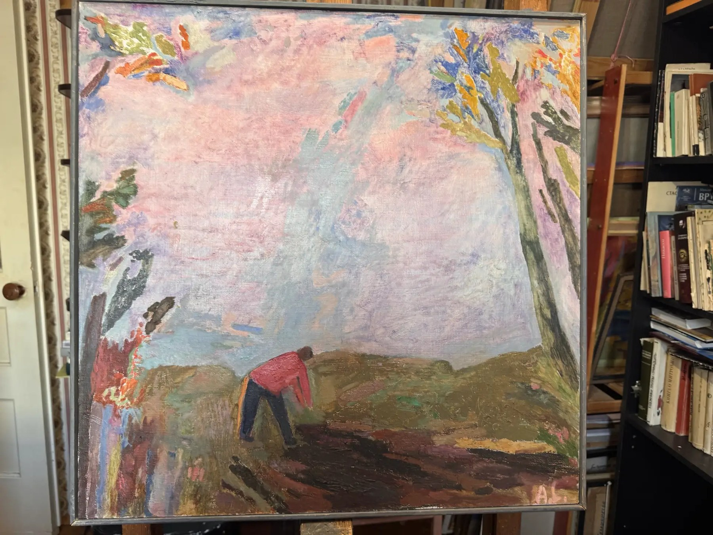
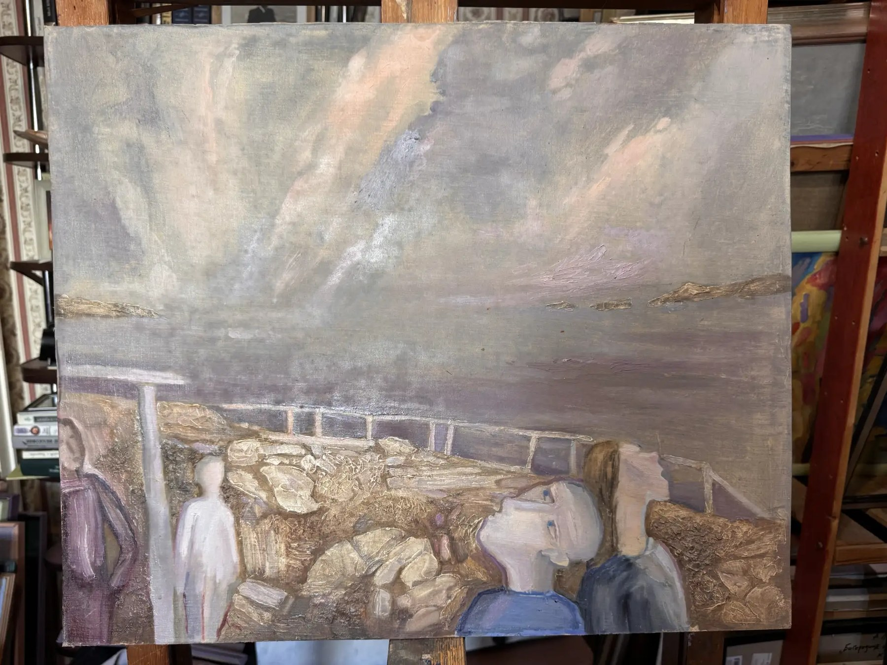
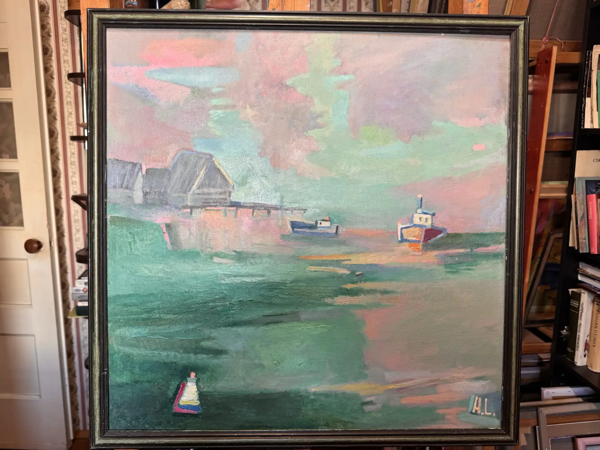

documentée dans les archivesPaysage roseOil on canvasundatedDimensions on requestdocumentée dans les archivesVoir l’œuvre
Valeur élevéeMer griseOil on canvasundatedDimensions on requestDocumentation provided on requestVoir l’œuvre
Niveau principalPort pastelOil on canvasundatedDimensions on requestDocumentation provided on requestVoir l’œuvre